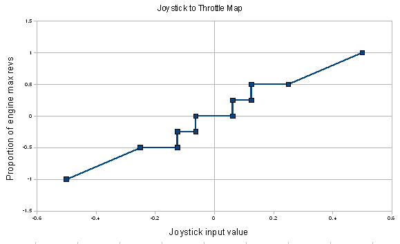

Using external controls with Bridge Command
Introduction
To increase the realism of the simulation, it is possible to use physical throttle levers and a wheel to control your vessel in Bridge Command.
In principle, any three axis analog joystick can be used, but in practice suitable joysticks are not readily available, and it is quite
simple to construct one to your own requirements. How to do this is explained at How to make a set of throttles
and wheel.
Details
Joystick support is enabled by default in Bridge Command, so the first step is to plug in your joystick and test if it works as expected, by
moving the controls on the joystick and checking how the engines and rudder respond. If they do not respond as expected, you may need to change
the settings.
Settings
To change the settings, start the Bridge Command launcher, and click on 'Settings: Main', to start the settings editor, and then change to the
joystick tab. The settings on this tab allow you to set which joystick channel is used to control the port engine, starboard engine, and rudder.
If the controller you want to use is not the only joystick connected to your system, you may have to change the 'joystick_no_' values to the
correct one. To find the joystick number, start Bridge Command, and open up the log window by pressing the '!' button just above the rudder
control, and scroll to the bottom of the log window, where you will see a list of the detected joysticks and their number. You can use different
joysticks to control different engines and the rudder.
You can also open the configuration file bc5.ini directly, in the Bridge Command installation directory.
Note that Bridge Command will look first in the user directory for a settings file, and will use this in preference to the global bc5.ini file.
The user directory is %appdata%/Bridge Command/x.x on Windows, ~/.Bridge Command/x.x on Linux and ~/Library/Application Support/Bridge Command/x.x on
OSX. For all of these, x.x is the Bridge Command version number, e.g. 5.6.
More options
If your set-up doesn't work with the default options, or you want more control over how the throttles and wheel work, you can edit all of the options
in the file. A complete example is geven below, and the options are:
-
port_throttle_channel: This sets which joystick channel is used to control the port throttle (or mainsail). This will normally be 1,2 or 3.
-
stbd_throttle_channel: This sets which joystick channel is used to control the starboard throttle (or jib). This will normally be 1,2 or 3.
-
rudder_channel: This sets which joystick channel is used to control the rudder. This will normally be 1,2 or 3.
-
port_throttleAzimuth_channel: This sets which joystick channel is used to control the port engine throttle, only if the own ship is controlled with azimuth drives.
-
stbd_throttleAzimuth_channel: This sets which joystick channel is used to control the port engine throttle, only if the own ship is controlled with azimuth drives.
-
portAzimuth_channel: This sets which joystick channel is used to control the port azimuth control angle (if used).
-
stbdAzimuth_channel: This sets which joystick channel is used to control the port azimuth control angle (if used).
-
bow_thruster_channel: This sets which joystick channel is used to control the bow thruster if present.
-
Stern_thruster_channel: This sets which joystick channel is used to control the stern thruster if present.
-
joystick_no_port: This sets which joystick on your system Bridge Command uses for the port throttle (or mainsail). If you only have one joystick connected, this will be 0.
-
joystick_no_stbd: This sets which joystick on your system Bridge Command uses for the starboard throttle (or jib). If you only have one joystick connected, this will be 0.
-
joystick_no_rudder: This sets which joystick on your system Bridge Command uses for the rudder. If you only have one joystick connected, this will be 0.
-
joystick_no_port_throttleAzimuth: This sets which joystick on your system Bridge Command uses for the port azimuth throttle. If you only have one joystick connected, this will be 0.
-
joystick_no_stbd_throttleAzimuth: This sets which joystick on your system Bridge Command uses for the stbd azimuth throttle. If you only have one joystick connected, this will be 0.
-
joystick_no_portAzimuth: This sets which joystick on your system Bridge Command uses for the port azimuth angle. If you only have one joystick connected, this will be 0.
-
joystick_no_stbdAzimuth: This sets which joystick on your system Bridge Command uses for the stbd azimuth angle. If you only have one joystick connected, this will be 0.
-
joystick_no_bow_thruster: This sets which joystick on your system Bridge Command uses for the bow thruster. If you only have one joystick connected, this will be 0.
-
joystick_no_stern_thruster: This sets which joystick on your system Bridge Command uses for the stern thruster. If you only have one joystick connected, this will be 0.
-
invert_rudder: This should be 0 or 1. If set to 1, it swaps the direction the rudder changes in response to the joystick input.
-
The following section sets the mapping between the joystick input value and the proportion of engine revs. It allows for fixed steps, such as slow ahead and half ahead, as well as different sensitivities for continuous control. This is set with fixed points that define the mapping of throttle to engine revs (see the image below)
-
joystick_map_points: The number of points in the mapping between the joystick input and the proportion of engine revs.
- For each point, 1 to joystick_map_points, the following must be defined:
-
joystick_map(point,1): The joystick input value
-
joystick_map(point,2): The proportion of max engine revs
-
If the joystick input is outside the defined range, the first or last output value will be used as appropriate.
- The following settings are used to map the joystick buttons. Any set to 0 will not be used.
- joystick_button_horn: Which joystick button to sound the horn
- joystick_button_change_view: Which joystick button to change the current view
- joystick_button_look_step_left: Which joystick button to look to the left, in a step equal to the view angle
- joystick_button_look_step_right: Which joystick button to look to the right, in a step equal to the view angle
- joystick_button_increase_bow_thrust: Which joystick button to make the bow thruster increase thrust in a stbd direction (If present in ship model)
- joystick_button_decrease_bow_thrust: Which joystick button to make the bow thruster increase thrust in a port direction (If present in ship model)
- joystick_button_increase_stern_thrust: Which joystick button to make the stern thruster increase thrust in a stbd direction (If present in ship model)
- joystick_button_decrease_stern_thrust: Which joystick button to make the stern thruster increase thrust in a port direction (If present in ship model)
- joystick_button_bearing_on: Which joystick button to show the bearing cross hairs
- joystick_button_bearing_off: Which joystick button to hide the bearing cross hairs
- joystick_button_zoom_on: Which joystick button to zoom the view (binoculars mode)
- joystick_button_zoom_off: Which joystick button to unzoom the view (binoculars mode off)
- joystick_button_look_left: Which joystick button to look around to the left (slowly)
- joystick_button_look_right: Which joystick button to look around to the right (slowly)
- joystick_button_look_up: Which joystick button to look up
- joystick_button_look_down: Which joystick button to look down
- If you are using a secondary joystick, the following settings allow you to configure which jostick is used for each button. If you only have one joystick, these will all be 0
- joystick_no_horn
- joystick_no_change_view
- joystick_no_look_step_left
- joystick_no_look_step_right
- joystick_no_increase_bow_thrust
- joystick_no_decrease_bow_thrust
- joystick_no_increase_stern_thrust
- joystick_no_decrease_stern_thrust
- joystick_no_bearing_on
- joystick_no_bearing_off
- joystick_no_zoom_on
- joystick_no_zoom_off
- joystick_no_look_left
- joystick_no_look_right
- joystick_no_look_up
- joystick_no_look_down
Example joystick mapping
This is the mapping in the example below. Each point is indicated, and the map gives fixed slow and half ahead and astern positions, and then the engines can be controlled up to full power. Half of the joystick input range is used.

Example
This maps the full engine range to half of the joystick range, and has the following mapping, which gives the fixed positions of slow ahead and half ahead, and then allows continuous control up to full ahead, and is the same going astern.
port_throttle_channel=1
stbd_throttle_channel=2
rudder_channel=3
joystick_no_port=0
joystick_no_stbd=0
joystick_no_rudder=0
joystick_map_points=12
joystick_map(1,1)=-0.5
joystick_map(1,2)=-1
joystick_map(2,1)=-0.25
joystick_map(2,2)=-0.5
joystick_map(3,1)=-0.125
joystick_map(3,2)=-0.5
joystick_map(4,1)=-0.125
joystick_map(4,2)=-0.25
joystick_map(5,1)=-0.0625
joystick_map(5,2)=-0.25
joystick_map(6,1)=-0.0625
joystick_map(6,2)=0
joystick_map(7,1)=0.0625
joystick_map(7,2)=0
joystick_map(8,1)=0.0625
joystick_map(8,2)=0.25
joystick_map(9,1)=0.125
joystick_map(9,2)=0.25
joystick_map(10,1)=0.125
joystick_map(10,2)=0.5
joystick_map(11,1)=0.25
joystick_map(11,2)=0.5
joystick_map(12,1)=0.5
joystick_map(12,2)=1